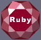

|  |
RIGS |
RIGS stands for "Ruby Interface to GNUstep" and is library that allows programmers to develop GNUstep applications using the remarkable Ruby language
Contents
[ Introduction | State | Documentation | Download RIGS | Related links ]
Introduction
Ruby is a remarkably well designed OO scripting language written by Yukihiro Matsumoto (a.k.a. Matz). Ruby has taken the best of many modern languages (Perl regexp, Eiffel syntax, SmallTalk pure OO approach, Objective C categories and protocols) and put them together. The result is a fast and lightweight interpreted scripting language for quick and easy object-oriented programming.
Given its similiraties with Objective C and Smalltalk it soon occured to me that Ruby would be a perfect fit as a modern and high level scripting language for the GNUstep environment.
Another interesting feature that is worth mentionning is that RIGS is entirely dynamic. It means that RIGS interact with the Objective C runtime to automatically discover the classes and methods available in the version of GNUstep base and gui libraries installed on your machine. So there is no need to recompile RIGS each time a GNUstep method has been modified. Similarly you can require your own Objective C libraries on the fly in Ruby and immediately get all the classes/methods available.
State
Currently RIGS is very usable though far from bullet proof. You'll find some real applications written in the Testing and Examples directories of the source tree showing that RIGS can really be used on a day to day basis.
Documentation
For installation help, please refer to the INSTALL file included in the RIGS package.
There is not much documentation about using RIGS because once you know Ruby and GNUstep, then scripting GNUstep applications with Ruby is really straightforward. Simply reading some Ruby sample code in the RIGS Testing and Examples directory will get you up to speed in no time.
Laurent Julliard, the author of RIGS will be happy to help you and welcomes your contribution (bug fix, code,...)
Download RIGS
The last offically released version can be download here (look for gnustep-ruby files).
You can also get a recent snapshot of RIGS using GNUstep's public CVS (module ruby). Please see the GNUstep project page for more information.
Related links
The Ruby language : the official Ruby site and lots of links.
Introduction to Ruby : online introduction to Ruby (slideware)
Programming Ruby : the online version of a very good book on Ruby.
GNUstep Library Suite: Reference about the different GNUstep libraries.